About Us
SHAM-ROCK-BOTICS is a FIRST Robotics team created in August of 2017 by eight FIRST alumni members. Currently, our team has 25 members and nine mentors. Each member has integral roles in both the robot-building and culture sides of our team. Each student chooses a culture project, such as our website, business administration, or team branding. Thanks to our teamwork, we can split up the work of designing, programming, building, and wiring the robot.
Teamwork and an emphasis on learning social, career, and educational skills that will one day help each individual succeed in the workforce are examples of what makes our team a great, hands-on learning opportunity that no other school program will accomodate.
Interested in becoming a member of SHAM-ROCK-BOTICS? Fill out our interest form!
 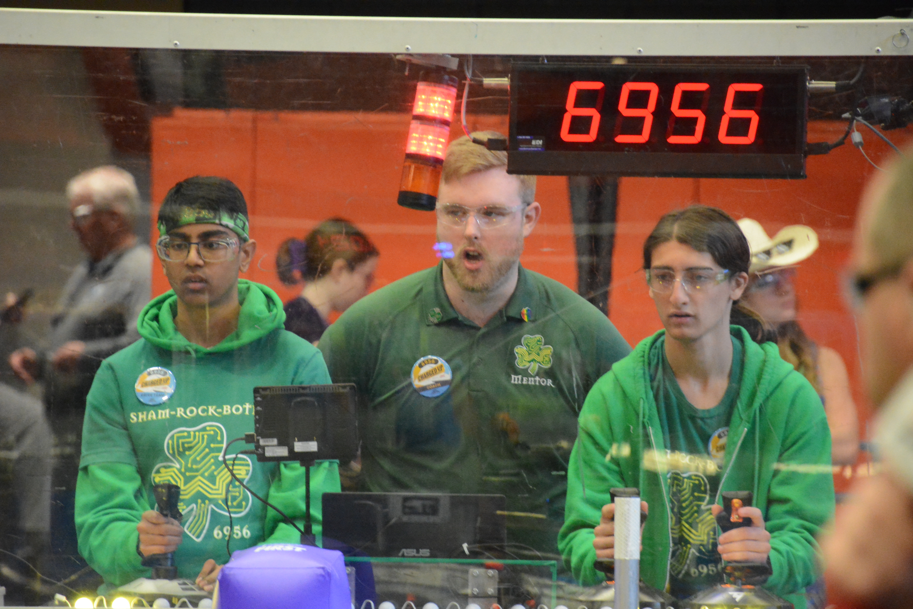
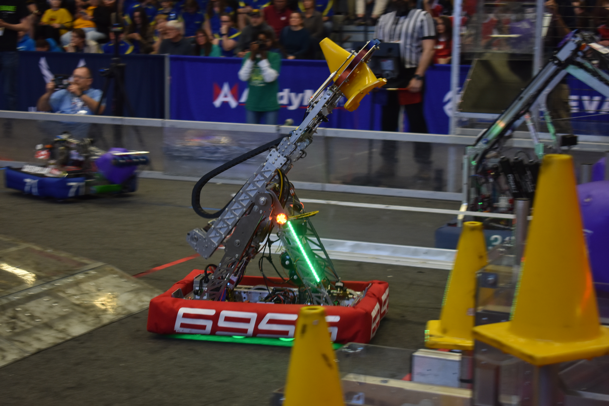
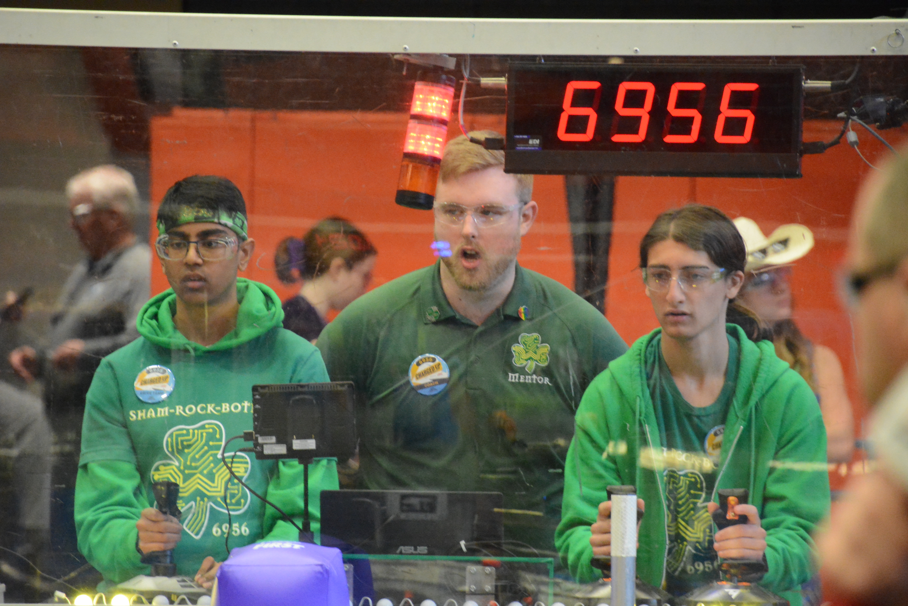
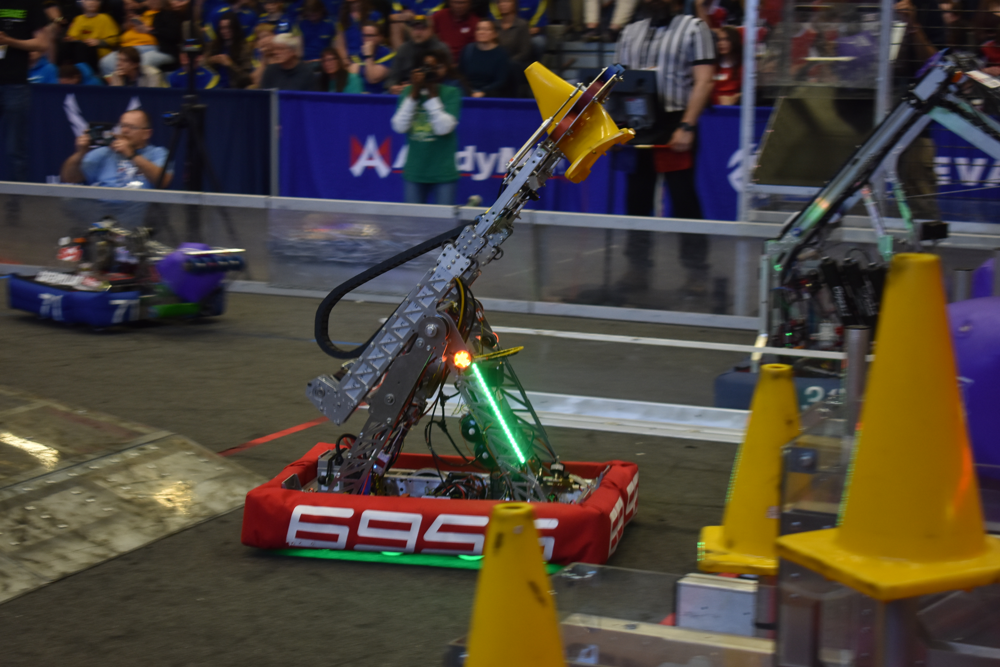
 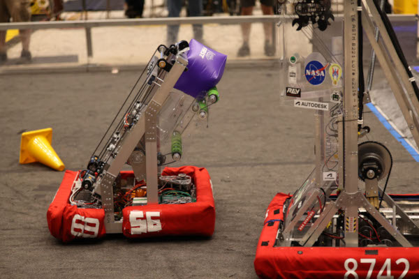
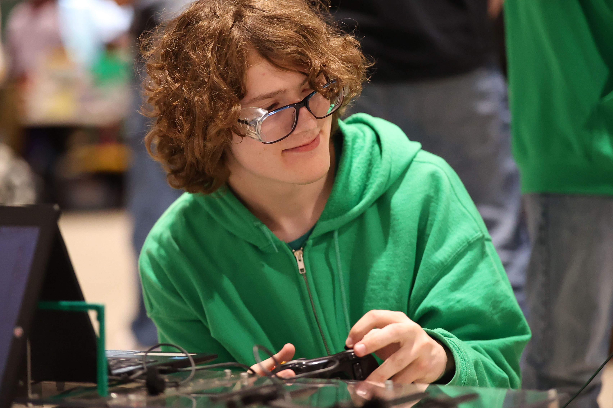
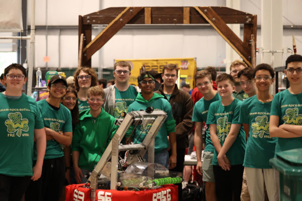
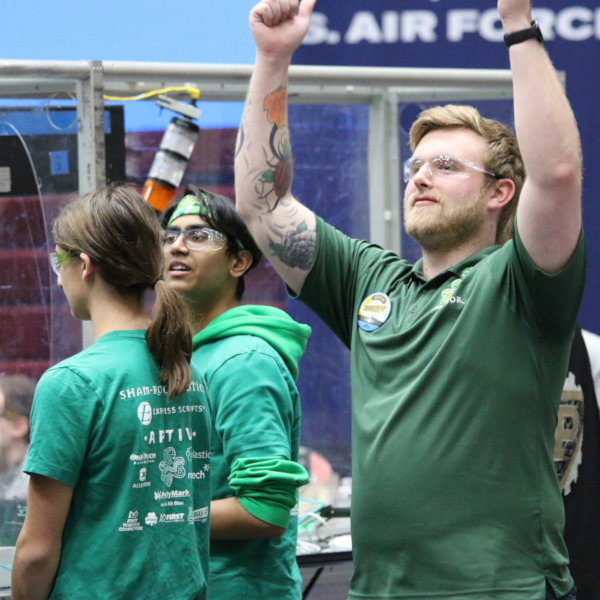
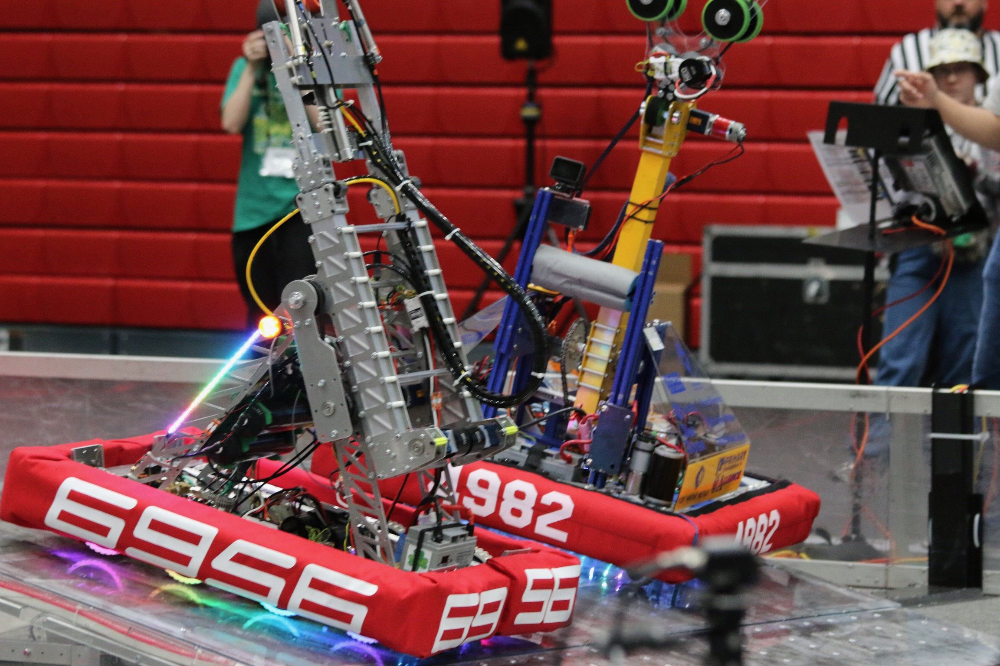
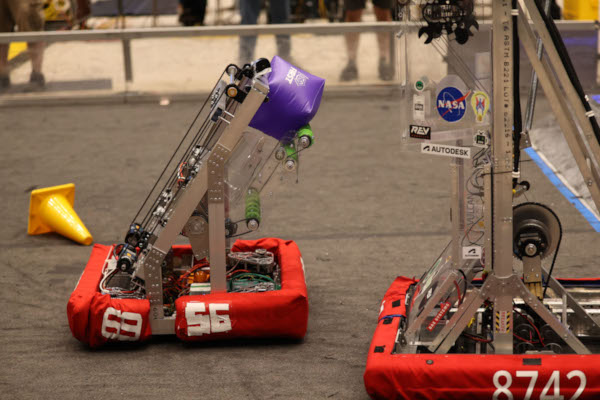
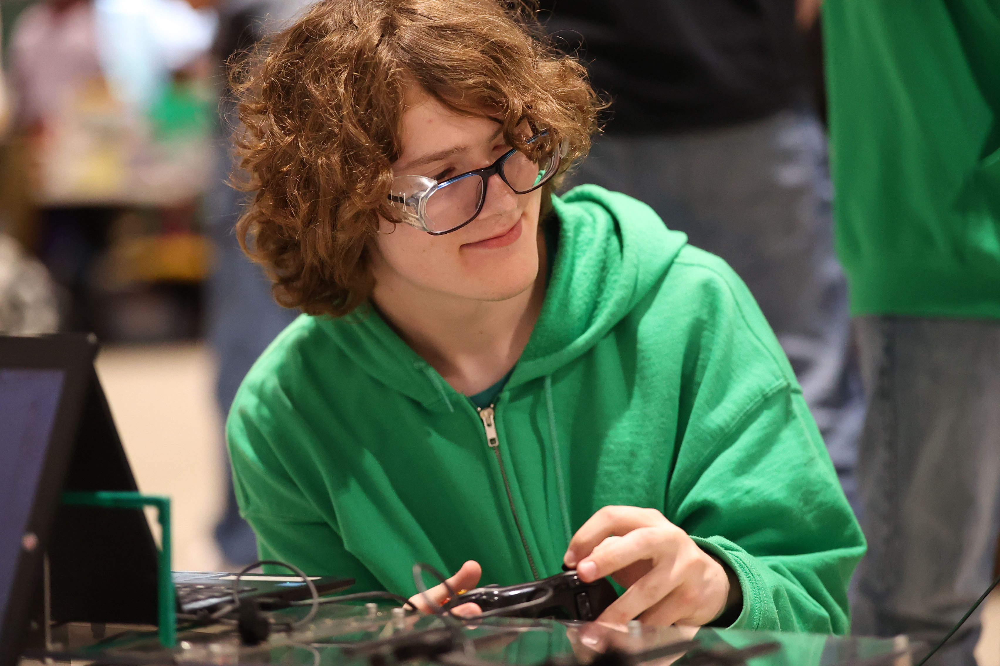
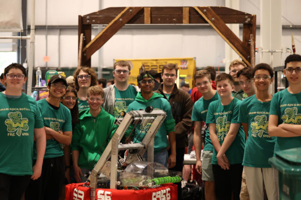
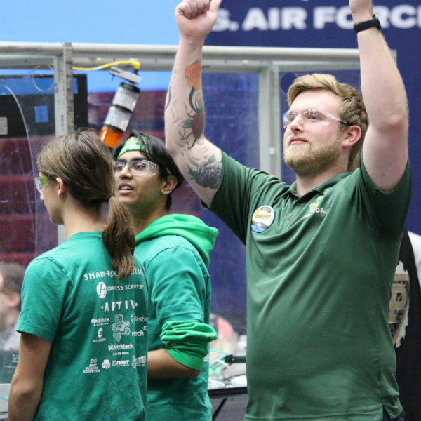
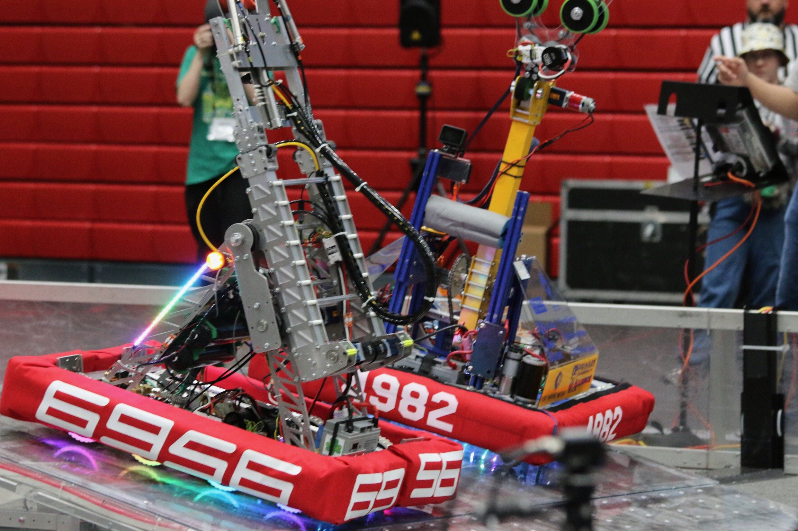